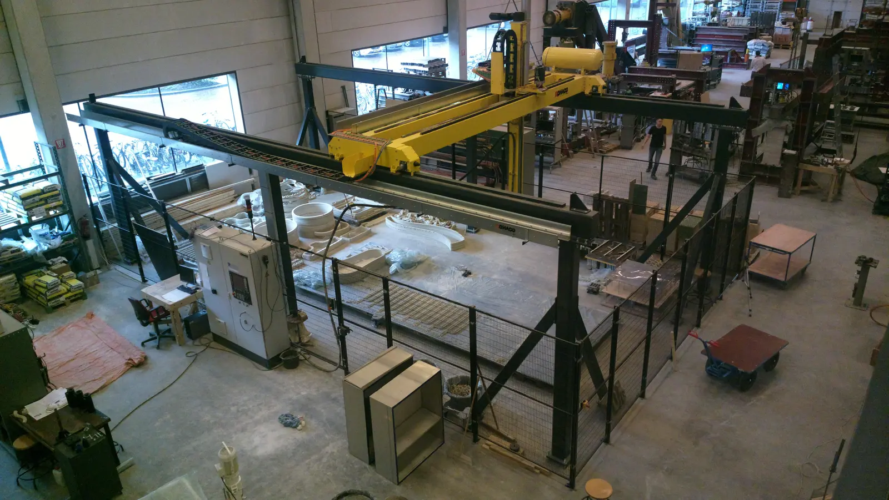

Autodesk Researchは2025年9月、Additive Tectonicsとの共同研究として、3Dプリントした残置型枠、亜麻繊維による補強、低炭素ジオポリマーモルタルを組み合わせる床部材の試作を紹介しました。
従来の床スラブとは何が違う？
通常のコンクリート床では、型枠を組み、配筋し、打設する工程が必要です。紹介された研究では、必要な荷重を受ける形状をデジタル設計し、廃材由来の木質・鉱物複合材を3Dプリントで成形した型枠を残したまま使う発想です。
取り組みを3つに分ける
| 要素 | 研究で試した内容 |
|---|---|
| 型枠 | 粒子層を選択的に固める3Dプリントと残置型枠 |
| 補強 | 設計した荷重経路に沿って亜麻繊維を配置するアプローチ |
| 充填材 | カリウム活性化のジオポリマーモルタル |
現場で役立つのは「材料」だけではない
この研究の着眼点は、従来の工程を別々に考えるのではなく、設計・製作・材料を一体で最適化しようとしていることです。将来、設備用の空間や固定点も設計時に組み込めれば、後工程の加工を減らせる可能性があります。ただし、これは研究側が示した展望であり、一般の現場で直ちに適用できるという意味ではありません。
普及までに必要な検証
- 耐久性、耐火性、荷重に対する構造性能
- 施工品質と検査方法、実際のコスト
- 法令・設計基準への適合
- 材料調達と廃材処理、長期的な環境評価
国内建築物への採用を勧めるものではありません。強度や炭素削減効果を本サイト独自に検証していないため、数値による優位性を断定しません。
元の発表を読む
Autodesk Research「No Formwork, No Steel: 3D-Printing a Greener Floor Slab」（2025年9月） ↗
上記の一次情報を要約し、日本語で解説しています。
3Dプリント床が一般工事に広がるまでの課題
研究で造形できることと、建築物の構造部材として採用できることは別です。設計用の強度・剛性・長期変形・接合部の性能、製造のばらつき、耐火・耐久性、現行の設計基準への適合確認が求められます。試作品の公表だけで一般工事に使えると解釈しないようにしましょう。
「省資材・低炭素」はどう検証する？
使用材料の量が減っても、設備稼働、輸送、養生、補修、廃棄段階まで見なければ全体の環境負荷は判断できません。比較対象となる従来スラブと同じ性能・耐用期間を前提に、ライフサイクル全体で評価する必要があります。この記事では研究紹介の範囲を超えたCO₂削減率を推測しません。
日本の現場への応用を考えるなら
当面の学びは装置の購入よりも後工程の手間を設計段階から減らせないかという発想です。設備ルート、支持金物、仮設型枠、施工時の開口を初期段階で整理し、設計変更や現場加工を減らす余地を見つけます。ただし、後から穴をあける工法も必要になるため、最適解は躯体条件と工程によって変わります。
この研究から持ち帰れる「設計の考え方」
そのまま施工する技術ではなく、工程をつなぎ直す視点として読むと参考になります。
- 仮設材の設置・撤去を最初から設計対象に入れる
- 必要な形状を検討してから材料量と製造方法を決める
- 設備ルートや固定位置を設計段階で調整し、後加工を減らす余地を探る
各項目は本サイトによる応用の考察です。研究対象の床スラブの施工可能性が確認されたという意味ではありません。